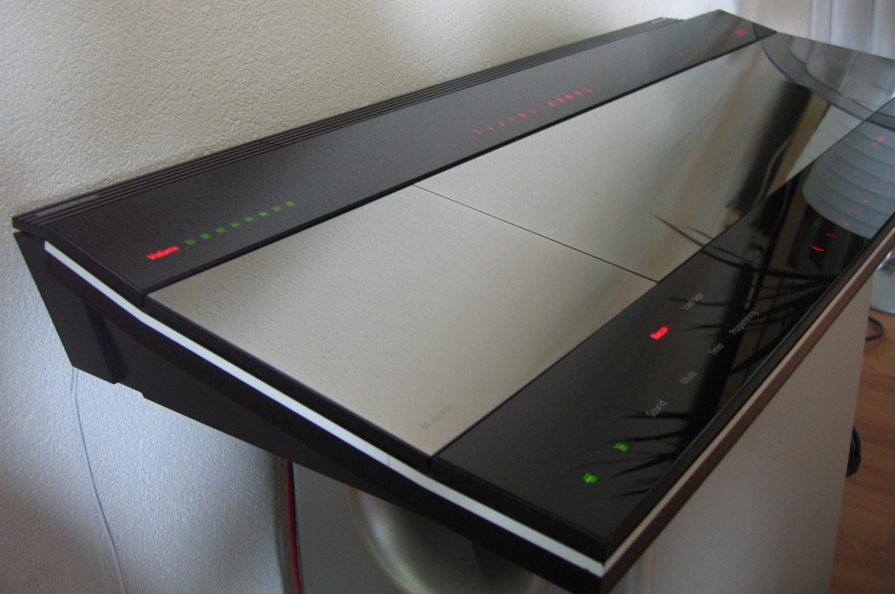

The Panel That Lit When You Leaned In
In 1989 Bang & Olufsen printed a stereo's buttons in graphite under smoked glass and drove a radio-frequency field through them — so the controls answered your finger before it landed, and the machine sat dark until you reached for it.
Walk past a good stereo from the 1980s and it talks to you from across the room. Rows of fibre-optic-lit legends, a grid of buttons waiting with their names showing, a little glow of "POWER" that never quite goes away. The Bang & Olufsen Beocenter 9500 (1989) does the opposite. When nobody is near it, the face is a dark mirror. It shows you nothing, because it has nothing to say to an empty room.
And then you reach.
The controls are ink, and the ink is live
There are no mechanical controls anywhere on the main face of the 9500. A tuner, CD player, cassette deck, and amplifier are packed into one slab of mirror-polished aluminium and smoked glass, and the entire control surface is printed. The labels and the electrodes behind them are laid down in conductive graphite ink on the underside of the glass.
Those printed traces are not decorative dead ink. A high-frequency current runs through them continuously, so each label sits inside a small electromagnetic field. Your finger approaching a control steals a little of that field before it arrives, and the circuit reads the theft as intent. The press happens on the way in, not at the bottom of a throw.
This is the quiet part that makes the 9500 strange. Every other button in the museum asks for a commitment: you choose a control, you push until something moves, the machine answers. The 9500 answers the approach itself. You do not press a keycap and watch it travel; the keycap is a picture of a control printed under glass, and the "travel" is a change in the field.
Only the relevant words are on
Because the labels are electrically driven, they can also be electrically hidden. Idle, the panel shows almost nothing. Wake the tuner, and the tuner's words come up. Open the CD drawer, and the CD's words replace them. The system never presents you the full menu of everything it can do; it presents the small vocabulary of the task you have entered.
Compare that to the era's professional gear, where every capability must be permanently visible because a knob is a hole in a panel and a hole cannot be un-drilled. Here the panel is glass, and glass can be rewritten in light. The interface is as large as the machine's vocabulary and as small as the current sentence.
The same surface also opens the door
The 9500 goes one step further than most invisible-control designs. The CD and cassette lids are not opened with a mechanical latch or a separate eject key. You touch the glass over the lid's display area, and the lid glides open on its own. The sensing surface both commands the machine and reveals its media. Even the act of physically getting at a disc has been routed through the printed field — there is no handle, no tab, no thumb-catch anywhere in the ritual.
That is rarer than it sounds. The museum's touch surfaces mostly sit on one side of the boundary: the Xerox Cat points, the HP-150 screens touch a display, the Turbo Touch 360 steers a game. The 9500's glass is simultaneously the control panel and the door.
What it fixed, and what it paid
The design lineage matters because this was not a one-off flourish. Bang & Olufsen's touch operation began with the Beomaster 1900 in 1976, and the Beocenter 9500, with David Lewis completing Jacob Jensen's panel language, was the mature version — flat, continuous, and free of moving parts that could wear out or fill with dust. No button to stick. No legend to fade. The face of the machine has exactly one thing that can fail: the electronics underneath it.
What it paid was affordance. A physical button tells you, by shape and spring, that it is a button and roughly how hard to push. Conductive ink under dark glass tells you nothing until it lights. The 9500 answers by making every reach a small act of faith: you extend a finger toward a word that is not yet lit, and if you are right, the machine lights the word and does the thing. It rewards people who know their system and punishes fumbling — the panel is a dark mirror to a stranger and an open book to its owner.
That trade is the whole reason it belongs in this museum. We tend to tell the story of touch as a march toward maximum immediate feedback: sharper haptics, brighter screens, no latency. The 9500 argues the other case. It shows that hiding an interface can make it faster for someone who has learned it, because the machine no longer spends your attention showing you everything it could do. It lights only what matters, refuses to shout into an empty room, and waits, dark and patient, for a hand to come close enough to disturb the field.
The controls are still there, printed in carbon under the glass. They are simply being polite about it.
